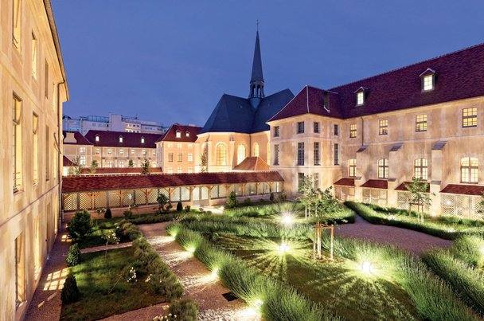

Patrimoine · Paris 7e, France
Laennec Rive Gauche
Immeubles historiques et restitués
Le projet
Sur le site de l’ancien hôpital Laennec, dans le 7e arrondissement de Paris, ce projet de 34 750 m² a réhabilité des immeubles historiques et restitué des bâtiments dans le respect du patrimoine, tout en atteignant les plus hauts niveaux de certification environnementale.
Notre mission
Avec Artelia, DANTEYO a assuré une mission de maîtrise d’œuvre d’exécution et d’OPC sur ce chantier exigeant : coordination des études et des travaux, contrôle de la conformité et pilotage du chantier.
Certifications
HQE ExceptionnelBREEAM ExcellentEffinergie+RT 2012 −40 %R2S